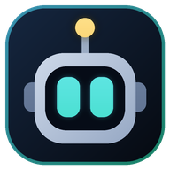

Binance Futures için otomatik işlem botu ve kontrol paneli · 2026-10-27
Bilgisayarınızda çalışan bot + masaüstü uygulaması (Windows 10/11, 64 bit)
Windows kurulumunu indir4a44926a6b6a5fc7c45905a66d4cdfcb2fe5344b4c1aad8cbe0bb2c38791bff4Setup dosyasını çalıştırın.7/24 çalışması için Ubuntu 22.04/24.04 sunucu (ör. Hostinger)
Linux paketini indir9336a6e1c555d2b67b1a77398ae8bc4c52a96b31d8d210cb3e77d0a15567a1cfSunucuda tek komutla kurulum:
curl -LO https://github.com/syhnist/rositradebot/releases/download/v2.4.1/RosiTradeBot-linux-2.4.1.tar.gz tar xzf RosiTradeBot-linux-2.4.1.tar.gz cd RosiTradeBot-linux-2.4.1 sudo bash deploy/linux/install.sh
Betik alan adını, panel parolasını ve anahtarları sorar; HTTPS otomatik kurulur.
Telefon uygulaması: botunuzun paneli, QR ile bağlanma (Android 8+)
Android uygulamasını indir (APK)4ce080a6b91fa51b7af7b13854700e75df04a25ae11a3254b7648f23e75a4c51Yeni sürüm çıktığında uygulama haber verir.
İndirme gerekmez: panel Safari'den ana ekrana uygulama olarak eklenir
Bildirimler için Telegram botu önerilir (Başlangıç Rehberi'nde anlatılıyor).
İndirilen dosyanın değişmediğini kontrol etmek için Windows'ta certutil -hashfile DOSYA SHA256, Linux'ta
sha256sum DOSYA çıktısını kartlardaki SHA-256 ile karşılaştırın. Tüm dosyalar: GitHub Releases.